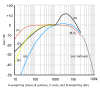

weighting

Definition: The process of weighting involves emphasizing the contribution of particular aspects of a phenomenon (or of a set of data) over others to an outcome or result; thereby highlighting those aspects in comparison to others in the analysis. That is, rather than each variable in the data set contributing equally to the final result, some of the data is adjusted to make a greater contribution than others. This is analogous to the practice of adding (extra) weight to one side of a pair of scales in order to favour either the buyer or seller.
Source: Wikipedia
Wikipedia Page (Something wrong with this association? Let us know.)
Wikidata Page (Something wrong with this association? Let us know.)